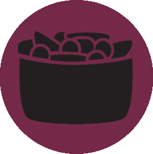
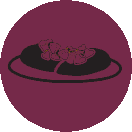

Add fruit to any kind of dish and brighten up your diet!
First!
Choose your course.
Second!
Choose a recipe.


Third!
Let's get cookin'!
Serves 1
Fruit Crisp
Preheat oven to 350 degrees F.
Mix together both sugars, flour, oats, and butter with a fork, until crumbly.
Toss sliced fruit with cinnamon and sugar until barely coated. Put in buttered pan. Cover with crisp topping.
Bake 30-40 minutes, or until lightly browned and bubbling.
What we'll need
1/2 cup brown sugar
1/2 cup white sugar
1/2 cup flour
1/2 cup butter (plus more for pan.)
1/2 cup oats
1 bunch fruit (sliced, enough to fill your pan)
1 dash cinnamon
2 dashes white sugar
Serves 4
Blueberry Ricotta Pancakes
In a bowl, combine the flour with baking powder, soda, and sugar.
In another bowl, whisk together the butter, ricotta cheese, egg, orange juice, milk, and vanilla. Combine the wet and dry ingredients just until blended. Gently stir in the blueberries .
In a skillet or griddle, heat oil over medium heat. Spoon a small amount of batter onto the hot skillet and spread gently with the back of the spoon.
What we'll need
1 1/2 cups all-purpose flour
1 teaspoon baking powder
1/4 teaspoon baking soda
1 1/2 tablespoons sugar
4 tablespoons melted butter
1/2 cup ricotta cheese
1 large egg
1/2 cup orange juice
1/3 cup milk
1/2 teaspoon vanilla extract
3/4 cup blueberries
Oil
Serves 5
Mixed Fruit Parfait
In four parfait glasses or serving dishes, layer the pineapple, raspberries, yogurt, banana and raisins.
Sprinkle with almonds.
Serve immediately.
What we'll need
2 cups pineapple chunks
1 cup raspberries
8 oz vanilla yogurt
1 cup sliced ripe banana
1/2 cup raisins
1/4 cup sliced almonds
Serves 4
Fruit Burrito
Combine yogurt with peanut butter in medium bowl.
Evenly spread peanut butter mixture on tortillas. Top with berries, then sprinkle with cinnamon sugar. Roll and fold filled tortillas.
What we'll need
1 cup nonfat vanilla yogurt
1/2 cup peanut butter
2 cups sliced strawberries
1 cup fresh blueberries
4 soft taco-size tortillas
2 tsp. cinnamon sugar
Serves 4
Harvest Chicken Salad Sandwich
Cook chicken in a frying pan.
Combine all ingredients in medium bowl
Serve on your favorite bread or in lettuce cups.
What we'll need
2 cups cut-up cooked chicken
1/2 cup mayonnaise
1/3 cup thinly sliced celery
1/3 cup cut-up apples or grapes
Serves 5
Pear and Blue Cheese Salad
Arrange mixed greens in large bowl or on serving platter.
Top with pear, cheese and almonds.
Drizzle with Raspberry Hazelnut Vinaigrette Dressing. Toss, if desired, before serving.
What we'll need
8 cups mixed salad greens
1 pear, cored and thinly sliced
1 cup crumbled blue cheese
1/4 cup sliced almonds
1/2 cup Raspberry Hazelnut Vinaigrette Dressing
Serves 5
Creamy Friut Salad
In a large bowl, combine the oranges, peaches, pineapple and marshmallows.
In a small bowl, beat the cream cheese, yogurt and sugar until smooth.
Pour over fruit and toss to coat. Refrigerate for 15 minutes.
What we'll need
1 can (11 ounces) mandarin oranges, drained
1 can (8-1/4 ounces) sliced peaches, drained
1 can (8 ounces) pineapple chunks, drained
1 cup miniature marshmallows
4 ounces cream cheese, softened
1/2 cup plain yogurt
1/4 cup sugar
Serves 4
B.L.A.T. Wraps
Place bacon in a large, deep skillet. Cook over medium heat for 10 to 15 minutes, or until crisp. Drain, crumble, and set aside.
Warm tortillas in microwave oven for 30 to 45 seconds, or until soft. Spread 1 tablespoon Ranch dressing down the center of each tortilla.
Layer crumbled bacon, avocado, tomato and lettuce over the dressing.
Roll the tortilla around the other ingredients.
What we'll need
8 slices bacon
4 (10 inch) flour tortillas
4 tablespoons Ranch salad dressing
1 avocado - peeled, pitted and diced
1 tomato, chopped
1 cup shredded lettuce
Serves 4-6
Chicken with Kiwi Salsa
Whisk together vinegar, orange juice concentrate, oil, and salt. Remove 2 tbsp of mixture and set aside for salsa dressing.
Add garlic and pepper to remaining mixture for marinade.
Place marinade in a 1-gallon sealable plastic bag or shallow glass dish with chicken; turn to coat. Let stand 20- 30 minutes; turn chicken occasionally.
Meanwhile, prepare salsa: Peel kiwi, cut crosswise into 1/4 inch thick slices, stack and cut into quarters. Toss kiwi in reserved dressing with pepper, strawberries and red onion. Set aside.
Grill chicken 5- 7 minutes at 375 F.
Serve chicken with salsa, black beans and french bread.
What we'll need
1 1/2-2 lbs boneless skinless chicken breasts
1/4 cup balsamic vinegar
1/4 cup orange juice concentrate
1 tablespoon oil
1 teaspoon salt
2 cloves crushed garlic
1/2 teaspoon ground black pepper
4 kiwis, peeled and cut
1 cup chopped yellow bell pepper
1 cup chopped strawberry
1/4 cup minced red onion
Serves 8
Sweet Fruit Pizza
Make pizza dough according to directions but add about 1/2 cup extra sugar to make it sweet. Bake the dough empty. Cool.
Spread with jam/jelly.
Using a potato peeler or grater, add enough white chocolate shavings to look like cheese.
Sprinkle on walnuts to look like sausage.
Slice strawberries to look like pepperoni slices.
What we'll need
1 pizza crust
1/2 cup raspberry jam
3 ounces white chocolate
1/4 cup walnuts, chopped
4 strawberries
Serves 8
Orange Chicken
Preheat the oven to 350 degrees F (175 degrees C).
In a small bowl, stir together the orange juice, soy sauce, onion soup mix and garlic powder; set aside.
Rinse chicken, and pat dry. Place chicken thighs into a 9x13 inch glass baking dish. Pour the orange juice mixture over.
Bake, uncovered, for 1 hour and 30 minutes in the preheated oven, basting every half hour. If using boneless chicken, reduce cooking time to 1 hour.
What we'll need
1 cup orange juice
1 tbsp soy sauce
1 oz onion soup mix
1/2 tsp garlic powder
8 chicken thighs
Serves 4
Berry Pork Chops
Heat oil in large skillet over medium-high heat. Add pork chops, cook and turn until browned, about 5 minutes per side. Reduce heat to low.
In small bowl, stir together strawberry preserves, mustard and vinegar.
Pour sauce over pork chops and cover the pan. Cook until sauce is thickened and pork chops are no longer pink inside, about 10 minutes.
An instant-read thermometer inserted into the center reads at least 145 degrees F (63 degrees C).